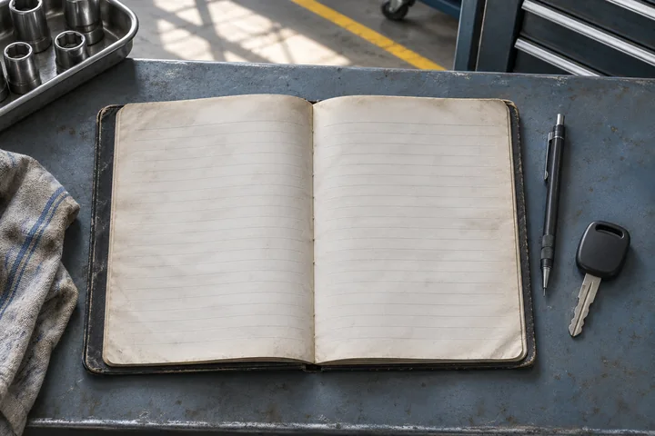

O que você já sabe sobre o carro.
Marque quais informações tem à mão. O caderno leva suas anotações ao pedido, sem pedir documentos.
Abrir meu caderno ↓
Antes da próxima visita
Marque o que está disponível. A conversa também pode começar com informações em aberto.
Nenhuma informação marcada.
Levar ao pedidoHistórico é ponto de partida.
Na visita, mostre o que você já tem e explique o que falta. A avaliação da equipe complementa o registro.
Antes de levar o veículo
Preciso ter todas as informações?
Não. Marque o que está disponível e leve as dúvidas para a conversa.
O caderno guarda documentos?
As marcações só aparecem no resumo de teste nesta página. Não há anexos.
Posso corrigir as opções?
Sim. Use Editar no resumo e volte ao caderno para ajustar as marcações.
Da anotação ao pedido.
O resumo junta o motivo da visita com o que você já tem à mão.
Preparar atendimento
Pedido de atendimento simulado
- Protocolo
- Motivo
- Observação
- Veículo